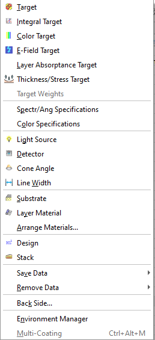
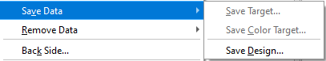
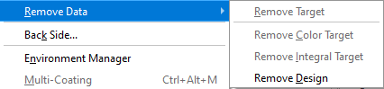

Data Menu
- Database Access Dialog
- Target Editor
- Number of Spectral Points Estimation
- Target Interpolation
- Target Qualifiers
- Spectral Characteristics Abbreviations
- Target Selection
- Floating Constant Targets
- User-Defined Target Editor
- Extended Argument Definition
- Angles of Incidence
- Target Wavelengths
- Target Generator
- Phase/GD/GDD Target Generator
- Target Peak List
- Integral Target
- Color Target
- Electric Field Target
- Layer Absorptance Target
- Thickness/Stress Target
- Target Weights
- Spectral/Angular Specifications
- Integral Specifications
- Color Specifications
- Light Source/Detector Database
- Blackbody Source Settings
- Cone Angle Database
- Line Width Database
- Substrate and Layer Material
- Layer Material Database
- Design Database
- Stack Database
- Setting Back Side Options
- Environment Manager
- Multi-Coating Manager
Data Menu
Navigation: OptiLayer Menu Commands >
Data Menu
` <variator.html>`__ ` <idh_optilayer.html>`__ ` <idh_modify_database.html>`__
The Data menu is designed to facilitate access to various database files and to enable operations that organize data within computer memory.
The majority of the commands within the Data menu trigger the opening of corresponding / database access windows. These interfaces include: Target, Integral Target, Color Target, E-Field Target, Layer Absorptance Target, Light Source, Detector, Cone Angle, Line Width, Substrate, Layer Material, Design, and Stack. Additionally, these commands can also be accessed from the OptiLayer Toolbar.



Target Opens the / / / database/ / / containing / / / Target/ / / files. This command is also available from the / / / OptiLayer Toolbar/ / / .
Integral Target Opens the / / / database/ / / containing / / / Integral Target/ / / files. This command is accessible from the / / / OptiLayer Toolbar/ / / as well.
Color Target Opens the / / / / database/ / / / containing / / / / Color Target/ / / / files. This command can also be accessed via the / / / / OptiLayer Toolbar/ / / / .
E-Field Target Opens the / / / / / database/ / / / / housing / / / / / Electric Field/ / / / / Target files.
Layer Absorptance Target Opens the / / / / / / database/ / / / / / containing files related to / / / / / / Layer Absorptance Target/ / / / / / .
Target Weights Opens a window that allows for the control and estimation of / / / / / / / weight factors/ / / / / / / assigned to different types of targets.
Spectral/Angular Specifications Opens the / / / / / / / / database/ / / / / / / / containing / / / / / / / / Spectral/Angular Specifications/ / / / / / / / .
Integral Specifications Opens the / / / / / / / / / database/ / / / / / / / / with / / / / / / / / / Integral Specifications/ / / / / / / / / .
Color Specifications Opens the / / / / / / / / / / database/ / / / / / / / / / containing / / / / / / / / / / Color Specifications/ / / / / / / / / / .
Light Source Opens the / / / / / / / / / / / database/ / / / / / / / / / / housing / / / / / / / / / / / Light Source/ / / / / / / / / / / files. This command is also accessible from the / / / / / / / / / / / OptiLayer Toolbar/ / / / / / / / / / / .
Detector Opens the / / / / / / / / / / / / database/ / / / / / / / / / / / containing / / / / / / / / / / / / Detector files/ / / / / / / / / / / / . This command is accessible from the / / / / / / / / / / / / OptiLayer Toolbar/ / / / / / / / / / / / as well.
Cone Angle Opens the / / / / / / / / / / / / / database/ / / / / / / / / / / / / that contains / / / / / / / / / / / / / Cone Angle/ / / / / / / / / / / / / files. This command can also be accessed via the / / / / / / / / / / / / / OptiLayer Toolbar/ / / / / / / / / / / / / .
Line Width Opens the / / / / / / / / / / / / / / database/ / / / / / / / / / / / / / housing / / / / / / / / / / / / / / Line Width/ / / / / / / / / / / / / / files.
Substrate Opens the / / / / / / / / / / / / / / / database/ / / / / / / / / / / / / / / containing / / / / / / / / / / / / / / / Substrate/ / / / / / / / / / / / / / / files. This command is also available from the / / / / / / / / / / / / / / / OptiLayer Toolbar/ / / / / / / / / / / / / / / .
Layer Material Opens the / / / / / / / / / / / / / / / / database/ / / / / / / / / / / / / / / / containing / / / / / / / / / / / / / / / / Layer Material/ / / / / / / / / / / / / / / / files. This command can be accessed from the / / / / / / / / / / / / / / / / OptiLayer Toolbar/ / / / / / / / / / / / / / / / as well.
Arrange Materials Opens the Materials page of the / / / / / / / / / / / / / / / / / / / / / / / / Analysis Options/ / / / / / / / / / / / / / / / / / / / / / / / window. This window enables you to assign and modify abbreviation letters for the materials loaded into memory and to determine the / / / / / / / / / / / / / / / / / / / / / / / / “state” of each material/ / / / / / / / / / / / / / / / / / / / / / / / during the / / / / / / / / / / / / / / / / / / / / / / / / Needle Optimization/ / / / / / / / / / / / / / / / / / / / / / / / procedure. Refer to “/ / / / / / / / / / / / / / / / / / / / / / / / Selecting Layer Materials/ / / / / / / / / / / / / / / / / / / / / / / / ” for an explanation of abbreviations and material “states”.
Design Opens the / / / / / / / / / / / / / / / / / / / / / / / / / / / / / database/ / / / / / / / / / / / / / / / / / / / / / / / / / / / / containing / / / / / / / / / / / / / / / / / / / / / / / / / / / / / Design/ / / / / / / / / / / / / / / / / / / / / / / / / / / / / files. This command is also accessible from the / / / / / / / / / / / / / / / / / / / / / / / / / / / / / OptiLayer Toolbar/ / / / / / / / / / / / / / / / / / / / / / / / / / / / / .
Stack Opens the / / / / / / / / / / / / / / / / / / / / / / / / / / / / / / / / / / database/ / / / / / / / / / / / / / / / / / / / / / / / / / / / / / / / / / containing / / / / / / / / / / / / / / / / / / / / / / / / / / / / / / / / / / Stack/ / / / / / / / / / / / / / / / / / / / / / / / / / / / / / / / / / files. This command can also be accessed from the / / / / / / / / / / / / / / / / / / / / / / / / / / / / / / / / / / OptiLayer Toolbar/ / / / / / / / / / / / / / / / / / / / / / / / / / / / / / / / / / .
Save Data Initiates a submenu that permits the saving of different objects to their corresponding databases. Upon executing this command, you will be prompted to enter a new file name. Refer to “/ / / / / / / / / / / / / / / / / / / / / / / / / / / / / / / / / / / / / / / Saving Current Design and Targets/ / / / / / / / / / / / / / / / / / / / / / / / / / / / / / / / / / / / / / / ” for additional information.
Remove Data Activates a submenu that allows the removal of the current object from memory.
Back Side Enables consideration of the substrate’s back side or a coating on the substrate back side when calculating spectral characteristics. This command opens the / / / / / / / / / / / / / / / / / / / / / / / / / / / / / / / / / / / / / / / / / / / / / / / / / Back Side Options/ / / / / / / / / / / / / / / / / / / / / / / / / / / / / / / / / / / / / / / / / / / / / / / / / dialog box. When the “Back Side Enabled” checkbox is selected, the optical properties of the substrate and any coating on the substrate’s back side will be included in the / / / / / / / / / / / / / / / / / / / / / / / / / / / / / / / / / / / / / / / / / / / / / / / / / Evaluation calculations/ / / / / / / / / / / / / / / / / / / / / / / / / / / / / / / / / / / / / / / / / / / / / / / / / . If no coating on the second surface is selected, then the calculations will only consider the substrate’s absorption and its back side surface reflection. If considering substrate absorption, specifying the substrate thickness in the “Substrate thickness” field is crucial. If a back side coating has been selected, it can be removed by clicking the “Remove Back Side Coating” button in the dialog box. To load a coating at the back side of the substrate, utilize either the right-click menu of the Design database or the small down-arrow button next to the Load command of the Design database.
Environment Manager Opens the / / / / / / / / / / / / / / / / / / / / / / / / / / / / / / / / / / / / / / / / / / / / / / / / / / / / / / Environment Manager/ / / / / / / / / / / / / / / / / / / / / / / / / / / / / / / / / / / / / / / / / / / / / / / / / / / / / / window, which controls the various working conditions of the coating design. Multiple environments can be defined, and in such cases, synthesis procedures will automatically account for all defined environments.
Multi-Coating Opens the Multi-Coating Manager dialog. It enables the configuration and management of systems consisting of several coatings, typically dispersive mirrors.